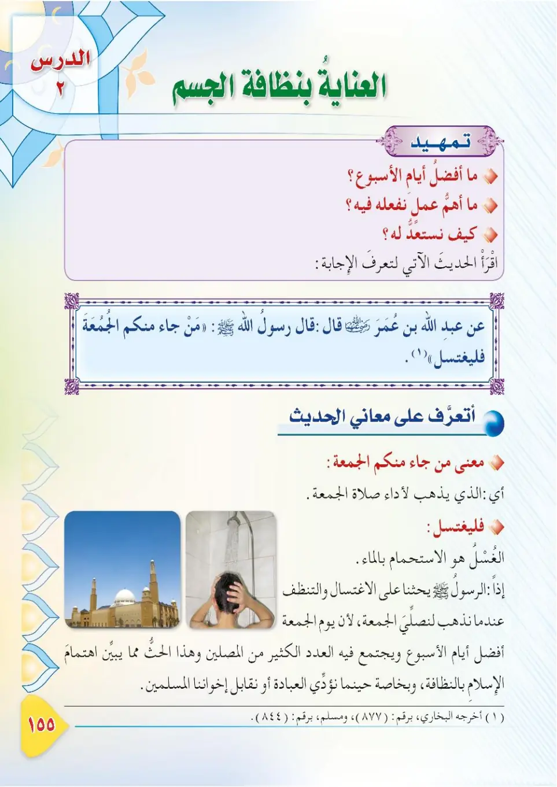
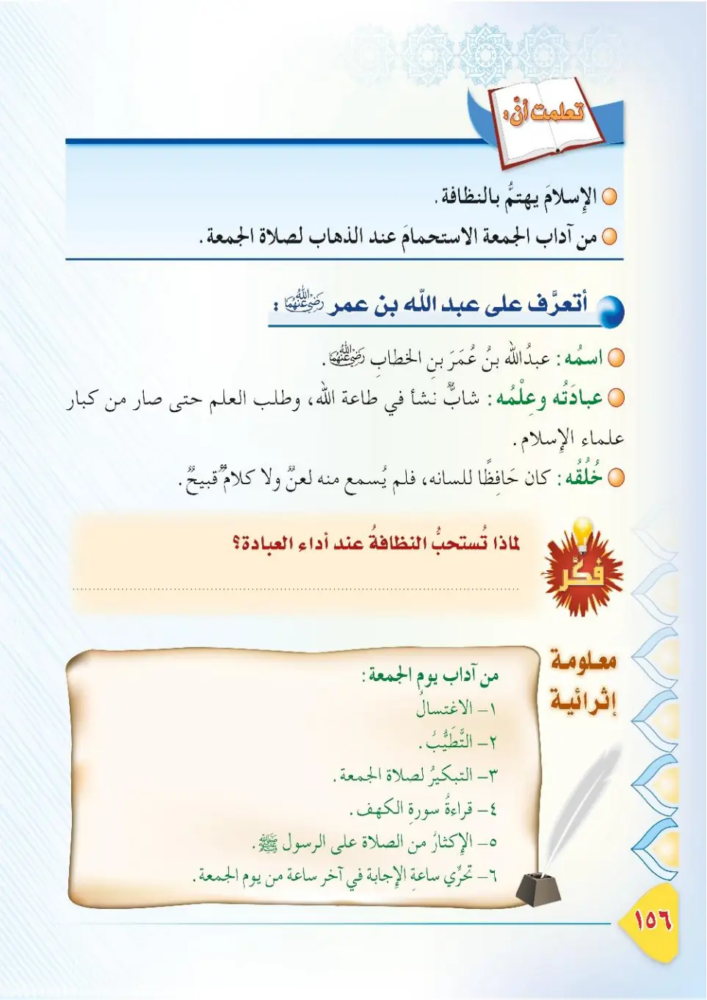
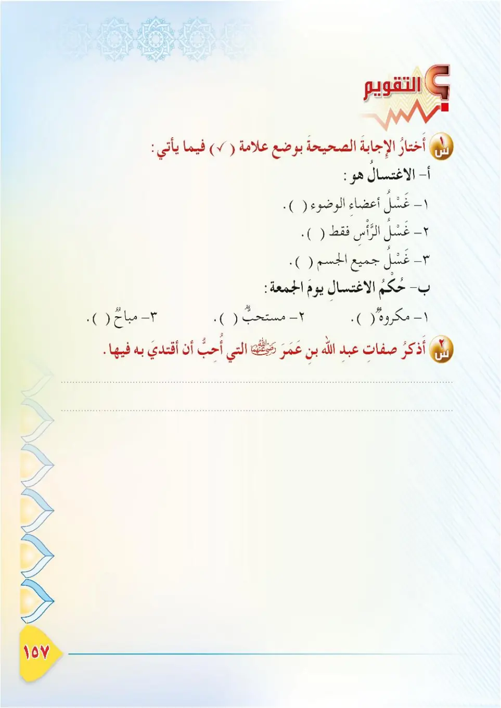

Stage 3·المرحلة الثالثة📖 Unit 4
الْعِنَايَةُ بِنَظَافَةِ الْجِسْمِ Care for the Cleanliness of the Body
From the Textbookpp. 156–158



الْجِسْمُ أَمَانَةٌ مِنَ اللهِ تَعَالَى، وَعَلَيْنَا أَنْ نُحَافِظَ عَلَيْهِ، وَأَنْ نَعْتَنِيَ بِنَظَافَتِهِ. وَقَدْ كَانَ النَّبِيُّ ﷺ حَرِيصًا عَلَى نَظَافَةِ جِسْمِهِ؛ بِالْمَضْمَضَةِ، وَالِاسْتِنْشَاقِ، وَالْوُضُوءِ، وَالِاغْتِسَالِ.
Al-jismu amanatun minallahi ta'ala, wa 'alayna an nuhafiza 'alayh, wa an na'taniya binadafatih. Wa qad kana an-nabiyyu ﷺ harisan 'ala nadafati jismih; bil-madmadah, wal-istinshaq, wal-wudu', wal-ightisal.
The body is a trust from Allah the Exalted, and we must take care of it and keep it clean. The Prophet ﷺ was keen on the cleanliness of his body through rinsing the mouth, sniffing water, ablution (wudu), and bathing (ghusl).
உடல் அல்லாஹ்வின் அமானிதம். அதை பாதுகாக்கவும், தூய்மையாக வைக்கவும் வேண்டும். வாய் கொப்பளித்தல், நாசியில் நீர் செலுத்தல், வுழூ, குளியல் (குஸ்லு) மூலம் உடலின் தூய்மையில் நபி ﷺ கவனமாக இருந்தார்கள்.
عَنْ عَبْدِ اللهِ بْنِ عُمَرَ رَضِيَ اللهُ عَنْهُمَا أَنَّ رَسُولَ اللهِ ﷺ قَالَ وَهُوَ وَاقِفٌ عَلَى الْمِنْبَرِ: «مَنْ جَاءَ مِنْكُمُ الْجُمُعَةَ فَلْيَغْتَسِلْ». أَخْرَجَهُ مُسْلِمٌ.
'An 'Abdillahi ibn 'Umara radiyallahu 'anhuma anna rasulallahi ﷺ qala wa huwa waqifun 'ala al-minbar: «Man ja'a minkumu al-jumu'ata falyaghtasil». Akhrajahu Muslim.
'Abdullah ibn 'Umar, may Allah be pleased with them both, reported that the Messenger of Allah ﷺ said while standing on the pulpit: "Whoever of you comes to the Friday prayer, let him take a bath (ghusl)." Narrated by Muslim.
அப்துல்லாஹ் இப்னு உமர் (ரலி) அறிவிக்கிறார்: ஜும்ஆ நாளில் மிம்பரில் நின்றுகொண்டு தூதர் ﷺ கூறினார்கள்: "உங்களில் யார் ஜும்ஆ தொழுகைக்கு வருகிறாரோ, அவர் குளிக்கட்டும்." (முஸ்லிம்)
مَاذَا نَسْتَفِيدُ مِنْ هَذَا الْحَدِيثِ؟ ١- اسْتِحْبَابُ الِاغْتِسَالِ يَوْمَ الْجُمُعَةِ، وَخُصُوصًا لِمَنْ أَرَادَ أَنْ يَأْتِيَ الْمَسْجِدَ. ٢- حِرْصُ النَّبِيِّ ﷺ عَلَى نَظَافَةِ الْمُسْلِمِينَ، وَاجْتِمَاعِهِمْ عَلَى طُهْرٍ وَنَظَافَةٍ.
Madha nastafeedu min hadha al-hadith? 1. istihbabu al-ightisali yawma al-jumu'ah, wa khususan liman arada an ya'tiya al-masjida. 2. hirsuhu ﷺ 'ala nadafati al-muslimeen, wa ijtimaihim 'ala tuhrin wa nadafah.
What do we learn from this hadith?
1. It is recommended to take a bath (ghusl) on Friday, especially for the one who intends to come to the mosque.
2. The Prophet's ﷺ concern for the cleanliness of the Muslims and for them gathering in purity and cleanliness.
இந்த ஹதீஸிலிருந்து என்ன பயன்?
1. ஜும்ஆ நாளில் குளிப்பது விரும்பத்தக்கது; குறிப்பாக மஸ்ஜித் வர உள்ளவர்.
2. முஸ்லிம்களின் தூய்மையில் நபியின் அக்கறை; தூய்மையாக ஒன்றுகூடுவது.
أَعْرِفُ عَبْدَ اللهِ بْنَ عُمَرَ رَضِيَ اللهُ عَنْهُمَا: ١- هُوَ ابْنُ الْخَلِيفَةِ عُمَرَ بْنِ الْخَطَّابِ رَضِيَ اللهُ عَنْهُ، وَأَحَدُ السَّابِقِينَ لِلْإِسْلَامِ. ٢- كَانَ شَدِيدَ الِالْتِزَامِ بِالسُّنَّةِ، حَرِيصًا عَلَى مُتَابَعَةِ النَّبِيِّ ﷺ فِي كُلِّ أَحْوَالِهِ. ٣- كَانَ يَغْتَسِلُ يَوْمَ الْجُمُعَةِ، وَيَلْبَسُ أَحْسَنَ ثِيَابِهِ، وَيَتَطَيَّبُ قَبْلَ ذَهَابِهِ إِلَى الْمَسْجِدِ. ٤- كَانَ مِنْ أَكْثَرِ الصَّحَابَةِ رِوَايَةً لِلْحَدِيثِ؛ فَرَوَى أَلْفًا وَسِتَّمِئَةٍ وَثَلَاثِينَ حَدِيثًا.
A'rifu 'Abdallahi ibn 'Umara radiyallahu 'anhuma: 1. huwa ibnu al-khalifati 'Umara ibn al-Khattab radiyallahu 'anhu, wa ahadu as-sabiqeen lil-islam. 2. kana shadida al-iltizam bis-sunnah, harisan 'ala mutaba'ati an-nabiyyi ﷺ fi kulli ahwalih. 3. kana yaghtasilu yawma al-jumu'ah, wa yalbasu ahsana thiyabih, wa yatayyabu qabla dhahabihi ila al-masjid. 4. kana min akthari as-sahabati riwayatan lil-hadith; farawa alfan wa sittami'atin wa thalathina hadithan.
I get to know 'Abdullah ibn 'Umar, may Allah be pleased with them both:
1. He is the son of the Caliph 'Umar ibn al-Khattab, may Allah be pleased with him, and one of the early Muslims.
2. He was firmly committed to the Sunnah and keen to follow the Prophet ﷺ in all his affairs.
3. He used to take a bath on Friday, wear his best clothes, and apply perfume before going to the mosque.
4. He was one of the most prolific narrators of hadith among the Companions; he narrated one thousand six hundred and thirty hadiths.
அப்துல்லாஹ் இப்னு உமர் (ரலி) அவர்களை அறிவோம்:
1. கலீபா உமர் இப்னு கத்தாப் (ரலி) அவர்களின் மகன்; இஸ்லாத்தை முதலில் ஏற்றவர்களில் ஒருவர்.
2. சுன்னத்தை கண்டிப்பாகக் கடைப்பிடிப்பவர்; நபி ﷺ அவர்களை அனைத்திலும் பின்பற்றக் கவனமானவர்.
3. ஜும்ஆ நாளில் குளித்து, சிறந்த உடை அணிந்து, நறுமணம் பூசிக்கொண்டு மஸ்ஜித் செல்வார்.
4. தோழர்களில் அதிக ஹதீஸ் அறிவிப்பாளர்; 1630 ஹதீஸ்களை அறிவித்தார்.
قَالَ اللهُ تَعَالَى: «إِنَّ اللَّهَ يُحِبُّ التَّوَّابِينَ وَيُحِبُّ الْمُتَطَهِّرِينَ»؛ فَالنَّظَافَةُ وَاجِبَةٌ عَلَى الْمُسْلِمِ صَغِيرًا كَانَ أَوْ كَبِيرًا.
Qala Allahu ta'ala: «Innallaha yuhibbu at-tawwabeena wa yuhibbu al-mutatahhireen»; fan-nadafatu wajibatun 'ala al-muslimi saghiran kana aw kabiran.
Allah the Exalted said: "Indeed, Allah loves those who repent and loves those who purify themselves." Cleanliness is obligatory upon the Muslim, whether young or old.
அல்லாஹ் கூறினான்: "நிச்சயமாக அல்லாஹ் பாவமன்னிப்பு கோறுவோரையும், தூய்மையாக இருப்போரையும் நேசிக்கிறான்." தூய்மை இளையோர், முதியோர் அனைவருக்கும் கடமை.